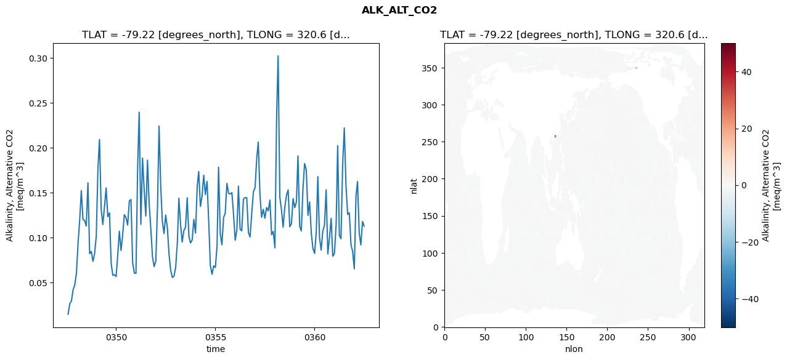
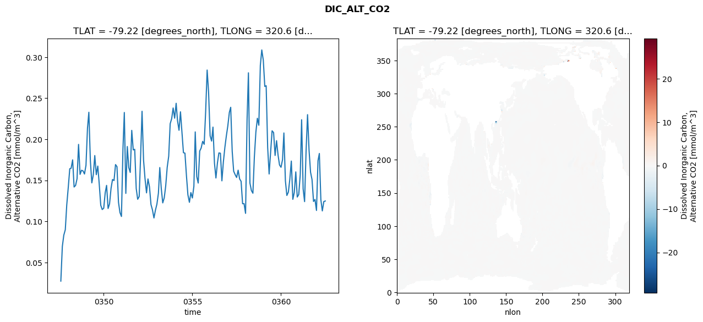
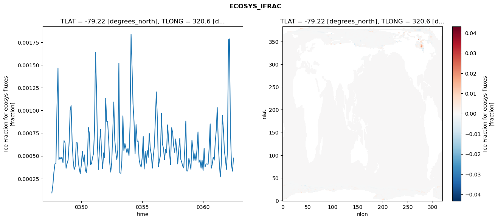
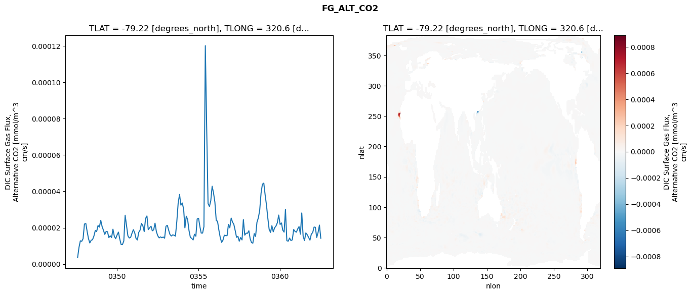

glb-dor_North_Atlantic_basin_002_1999-07-01_00010#
Simulation details#
Case: smyle.cdr-atlas-v0.glb-dor_North_Atlantic_basin_002_1999-07-01_00010.001
Basin: North_Atlantic_basin
Polygon: 2.0
Start date: 1999-07
Show code cell source Hide code cell source
import xarray as xr
import matplotlib.pyplot as plt
Show code cell source Hide code cell source
zarr_store = "/path/to/zarr/store"
# Parameters
zarr_store = "/global/cfs/projectdirs/m4746/Projects/Ocean-CDR-Atlas-v0/data/validation/smyle.cdr-atlas-v0.glb-dor_North_Atlantic_basin_002_1999-07-01_00010.001.validation.zarr"
Show code cell source Hide code cell source
%%time
ds_o = xr.open_zarr(zarr_store).compute()
ds_o
CPU times: user 662 ms, sys: 492 ms, total: 1.15 s
Wall time: 1.4 s
<xarray.Dataset> Size: 2MB
Dimensions: (nlat: 384, nlon: 320, time: 180)
Coordinates:
TLAT float64 8B -79.22
TLONG float64 8B 320.6
ULAT float64 8B -78.95
ULONG float64 8B 321.1
* time (time) object 1kB 0347-08-01 00:00:00 ... 0362-07-01 0...
z_t float32 4B 500.0
Dimensions without coordinates: nlat, nlon
Data variables:
ALK_ALT_CO2_diff (nlat, nlon) float32 492kB nan nan nan ... nan nan nan
ALK_ALT_CO2_rmse (time) float64 1kB 0.01455 0.02651 ... 0.1179 0.1127
DIC_ALT_CO2_diff (nlat, nlon) float32 492kB nan nan nan ... nan nan nan
DIC_ALT_CO2_rmse (time) float64 1kB 0.02735 0.0695 ... 0.1242 0.1249
ECOSYS_IFRAC_diff (nlat, nlon) float32 492kB nan nan nan ... nan nan nan
ECOSYS_IFRAC_rmse (time) float64 1kB 9.25e-05 0.0001815 ... 0.0004761
FG_ALT_CO2_diff (nlat, nlon) float32 492kB nan nan nan ... nan nan nan
FG_ALT_CO2_rmse (time) float64 1kB 3.593e-06 9.188e-06 ... 1.418e-05xarray.Dataset
- nlat: 384
- nlon: 320
- time: 180
- TLAT()float64-79.22
- long_name :
- array of t-grid latitudes
- units :
- degrees_north
array(-79.22052261)
- TLONG()float64320.6
- long_name :
- array of t-grid longitudes
- units :
- degrees_east
array(320.56250892)
- ULAT()float64-78.95
- long_name :
- array of u-grid latitudes
- units :
- degrees_north
array(-78.95289509)
- ULONG()float64321.1
- long_name :
- array of u-grid longitudes
- units :
- degrees_east
array(321.12500894)
- time(time)object0347-08-01 00:00:00 ... 0362-07-...
- bounds :
- time_bound
- long_name :
- time
array([cftime.DatetimeNoLeap(347, 8, 1, 0, 0, 0, 0, has_year_zero=True), cftime.DatetimeNoLeap(347, 9, 1, 0, 0, 0, 0, has_year_zero=True), cftime.DatetimeNoLeap(347, 10, 1, 0, 0, 0, 0, has_year_zero=True), cftime.DatetimeNoLeap(347, 11, 1, 0, 0, 0, 0, has_year_zero=True), cftime.DatetimeNoLeap(347, 12, 1, 0, 0, 0, 0, has_year_zero=True), cftime.DatetimeNoLeap(348, 1, 1, 0, 0, 0, 0, has_year_zero=True), cftime.DatetimeNoLeap(348, 2, 1, 0, 0, 0, 0, has_year_zero=True), cftime.DatetimeNoLeap(348, 3, 1, 0, 0, 0, 0, has_year_zero=True), cftime.DatetimeNoLeap(348, 4, 1, 0, 0, 0, 0, has_year_zero=True), cftime.DatetimeNoLeap(348, 5, 1, 0, 0, 0, 0, has_year_zero=True), cftime.DatetimeNoLeap(348, 6, 1, 0, 0, 0, 0, has_year_zero=True), cftime.DatetimeNoLeap(348, 7, 1, 0, 0, 0, 0, has_year_zero=True), cftime.DatetimeNoLeap(348, 8, 1, 0, 0, 0, 0, has_year_zero=True), cftime.DatetimeNoLeap(348, 9, 1, 0, 0, 0, 0, has_year_zero=True), cftime.DatetimeNoLeap(348, 10, 1, 0, 0, 0, 0, has_year_zero=True), cftime.DatetimeNoLeap(348, 11, 1, 0, 0, 0, 0, has_year_zero=True), cftime.DatetimeNoLeap(348, 12, 1, 0, 0, 0, 0, has_year_zero=True), cftime.DatetimeNoLeap(349, 1, 1, 0, 0, 0, 0, has_year_zero=True), cftime.DatetimeNoLeap(349, 2, 1, 0, 0, 0, 0, has_year_zero=True), cftime.DatetimeNoLeap(349, 3, 1, 0, 0, 0, 0, has_year_zero=True), cftime.DatetimeNoLeap(349, 4, 1, 0, 0, 0, 0, has_year_zero=True), cftime.DatetimeNoLeap(349, 5, 1, 0, 0, 0, 0, has_year_zero=True), cftime.DatetimeNoLeap(349, 6, 1, 0, 0, 0, 0, has_year_zero=True), cftime.DatetimeNoLeap(349, 7, 1, 0, 0, 0, 0, has_year_zero=True), cftime.DatetimeNoLeap(349, 8, 1, 0, 0, 0, 0, has_year_zero=True), cftime.DatetimeNoLeap(349, 9, 1, 0, 0, 0, 0, has_year_zero=True), cftime.DatetimeNoLeap(349, 10, 1, 0, 0, 0, 0, has_year_zero=True), cftime.DatetimeNoLeap(349, 11, 1, 0, 0, 0, 0, has_year_zero=True), cftime.DatetimeNoLeap(349, 12, 1, 0, 0, 0, 0, has_year_zero=True), cftime.DatetimeNoLeap(350, 1, 1, 0, 0, 0, 0, has_year_zero=True), cftime.DatetimeNoLeap(350, 2, 1, 0, 0, 0, 0, has_year_zero=True), cftime.DatetimeNoLeap(350, 3, 1, 0, 0, 0, 0, has_year_zero=True), cftime.DatetimeNoLeap(350, 4, 1, 0, 0, 0, 0, has_year_zero=True), cftime.DatetimeNoLeap(350, 5, 1, 0, 0, 0, 0, has_year_zero=True), cftime.DatetimeNoLeap(350, 6, 1, 0, 0, 0, 0, has_year_zero=True), cftime.DatetimeNoLeap(350, 7, 1, 0, 0, 0, 0, has_year_zero=True), cftime.DatetimeNoLeap(350, 8, 1, 0, 0, 0, 0, has_year_zero=True), cftime.DatetimeNoLeap(350, 9, 1, 0, 0, 0, 0, has_year_zero=True), cftime.DatetimeNoLeap(350, 10, 1, 0, 0, 0, 0, has_year_zero=True), cftime.DatetimeNoLeap(350, 11, 1, 0, 0, 0, 0, has_year_zero=True), cftime.DatetimeNoLeap(350, 12, 1, 0, 0, 0, 0, has_year_zero=True), cftime.DatetimeNoLeap(351, 1, 1, 0, 0, 0, 0, has_year_zero=True), cftime.DatetimeNoLeap(351, 2, 1, 0, 0, 0, 0, has_year_zero=True), cftime.DatetimeNoLeap(351, 3, 1, 0, 0, 0, 0, has_year_zero=True), cftime.DatetimeNoLeap(351, 4, 1, 0, 0, 0, 0, has_year_zero=True), cftime.DatetimeNoLeap(351, 5, 1, 0, 0, 0, 0, has_year_zero=True), cftime.DatetimeNoLeap(351, 6, 1, 0, 0, 0, 0, has_year_zero=True), cftime.DatetimeNoLeap(351, 7, 1, 0, 0, 0, 0, has_year_zero=True), cftime.DatetimeNoLeap(351, 8, 1, 0, 0, 0, 0, has_year_zero=True), cftime.DatetimeNoLeap(351, 9, 1, 0, 0, 0, 0, has_year_zero=True), cftime.DatetimeNoLeap(351, 10, 1, 0, 0, 0, 0, has_year_zero=True), cftime.DatetimeNoLeap(351, 11, 1, 0, 0, 0, 0, has_year_zero=True), cftime.DatetimeNoLeap(351, 12, 1, 0, 0, 0, 0, has_year_zero=True), cftime.DatetimeNoLeap(352, 1, 1, 0, 0, 0, 0, has_year_zero=True), cftime.DatetimeNoLeap(352, 2, 1, 0, 0, 0, 0, has_year_zero=True), cftime.DatetimeNoLeap(352, 3, 1, 0, 0, 0, 0, has_year_zero=True), cftime.DatetimeNoLeap(352, 4, 1, 0, 0, 0, 0, has_year_zero=True), cftime.DatetimeNoLeap(352, 5, 1, 0, 0, 0, 0, has_year_zero=True), cftime.DatetimeNoLeap(352, 6, 1, 0, 0, 0, 0, has_year_zero=True), cftime.DatetimeNoLeap(352, 7, 1, 0, 0, 0, 0, has_year_zero=True), cftime.DatetimeNoLeap(352, 8, 1, 0, 0, 0, 0, has_year_zero=True), cftime.DatetimeNoLeap(352, 9, 1, 0, 0, 0, 0, has_year_zero=True), cftime.DatetimeNoLeap(352, 10, 1, 0, 0, 0, 0, has_year_zero=True), cftime.DatetimeNoLeap(352, 11, 1, 0, 0, 0, 0, has_year_zero=True), cftime.DatetimeNoLeap(352, 12, 1, 0, 0, 0, 0, has_year_zero=True), cftime.DatetimeNoLeap(353, 1, 1, 0, 0, 0, 0, has_year_zero=True), cftime.DatetimeNoLeap(353, 2, 1, 0, 0, 0, 0, has_year_zero=True), cftime.DatetimeNoLeap(353, 3, 1, 0, 0, 0, 0, has_year_zero=True), cftime.DatetimeNoLeap(353, 4, 1, 0, 0, 0, 0, has_year_zero=True), cftime.DatetimeNoLeap(353, 5, 1, 0, 0, 0, 0, has_year_zero=True), cftime.DatetimeNoLeap(353, 6, 1, 0, 0, 0, 0, has_year_zero=True), cftime.DatetimeNoLeap(353, 7, 1, 0, 0, 0, 0, has_year_zero=True), cftime.DatetimeNoLeap(353, 8, 1, 0, 0, 0, 0, has_year_zero=True), cftime.DatetimeNoLeap(353, 9, 1, 0, 0, 0, 0, has_year_zero=True), cftime.DatetimeNoLeap(353, 10, 1, 0, 0, 0, 0, has_year_zero=True), cftime.DatetimeNoLeap(353, 11, 1, 0, 0, 0, 0, has_year_zero=True), cftime.DatetimeNoLeap(353, 12, 1, 0, 0, 0, 0, has_year_zero=True), cftime.DatetimeNoLeap(354, 1, 1, 0, 0, 0, 0, has_year_zero=True), cftime.DatetimeNoLeap(354, 2, 1, 0, 0, 0, 0, has_year_zero=True), cftime.DatetimeNoLeap(354, 3, 1, 0, 0, 0, 0, has_year_zero=True), cftime.DatetimeNoLeap(354, 4, 1, 0, 0, 0, 0, has_year_zero=True), cftime.DatetimeNoLeap(354, 5, 1, 0, 0, 0, 0, has_year_zero=True), cftime.DatetimeNoLeap(354, 6, 1, 0, 0, 0, 0, has_year_zero=True), cftime.DatetimeNoLeap(354, 7, 1, 0, 0, 0, 0, has_year_zero=True), cftime.DatetimeNoLeap(354, 8, 1, 0, 0, 0, 0, has_year_zero=True), cftime.DatetimeNoLeap(354, 9, 1, 0, 0, 0, 0, has_year_zero=True), cftime.DatetimeNoLeap(354, 10, 1, 0, 0, 0, 0, has_year_zero=True), cftime.DatetimeNoLeap(354, 11, 1, 0, 0, 0, 0, has_year_zero=True), cftime.DatetimeNoLeap(354, 12, 1, 0, 0, 0, 0, has_year_zero=True), cftime.DatetimeNoLeap(355, 1, 1, 0, 0, 0, 0, has_year_zero=True), cftime.DatetimeNoLeap(355, 2, 1, 0, 0, 0, 0, has_year_zero=True), cftime.DatetimeNoLeap(355, 3, 1, 0, 0, 0, 0, has_year_zero=True), cftime.DatetimeNoLeap(355, 4, 1, 0, 0, 0, 0, has_year_zero=True), cftime.DatetimeNoLeap(355, 5, 1, 0, 0, 0, 0, has_year_zero=True), cftime.DatetimeNoLeap(355, 6, 1, 0, 0, 0, 0, has_year_zero=True), cftime.DatetimeNoLeap(355, 7, 1, 0, 0, 0, 0, has_year_zero=True), cftime.DatetimeNoLeap(355, 8, 1, 0, 0, 0, 0, has_year_zero=True), cftime.DatetimeNoLeap(355, 9, 1, 0, 0, 0, 0, has_year_zero=True), cftime.DatetimeNoLeap(355, 10, 1, 0, 0, 0, 0, has_year_zero=True), cftime.DatetimeNoLeap(355, 11, 1, 0, 0, 0, 0, has_year_zero=True), cftime.DatetimeNoLeap(355, 12, 1, 0, 0, 0, 0, has_year_zero=True), cftime.DatetimeNoLeap(356, 1, 1, 0, 0, 0, 0, has_year_zero=True), cftime.DatetimeNoLeap(356, 2, 1, 0, 0, 0, 0, has_year_zero=True), cftime.DatetimeNoLeap(356, 3, 1, 0, 0, 0, 0, has_year_zero=True), cftime.DatetimeNoLeap(356, 4, 1, 0, 0, 0, 0, has_year_zero=True), cftime.DatetimeNoLeap(356, 5, 1, 0, 0, 0, 0, has_year_zero=True), cftime.DatetimeNoLeap(356, 6, 1, 0, 0, 0, 0, has_year_zero=True), cftime.DatetimeNoLeap(356, 7, 1, 0, 0, 0, 0, has_year_zero=True), cftime.DatetimeNoLeap(356, 8, 1, 0, 0, 0, 0, has_year_zero=True), cftime.DatetimeNoLeap(356, 9, 1, 0, 0, 0, 0, has_year_zero=True), cftime.DatetimeNoLeap(356, 10, 1, 0, 0, 0, 0, has_year_zero=True), cftime.DatetimeNoLeap(356, 11, 1, 0, 0, 0, 0, has_year_zero=True), cftime.DatetimeNoLeap(356, 12, 1, 0, 0, 0, 0, has_year_zero=True), cftime.DatetimeNoLeap(357, 1, 1, 0, 0, 0, 0, has_year_zero=True), cftime.DatetimeNoLeap(357, 2, 1, 0, 0, 0, 0, has_year_zero=True), cftime.DatetimeNoLeap(357, 3, 1, 0, 0, 0, 0, has_year_zero=True), cftime.DatetimeNoLeap(357, 4, 1, 0, 0, 0, 0, has_year_zero=True), cftime.DatetimeNoLeap(357, 5, 1, 0, 0, 0, 0, has_year_zero=True), cftime.DatetimeNoLeap(357, 6, 1, 0, 0, 0, 0, has_year_zero=True), cftime.DatetimeNoLeap(357, 7, 1, 0, 0, 0, 0, has_year_zero=True), cftime.DatetimeNoLeap(357, 8, 1, 0, 0, 0, 0, has_year_zero=True), cftime.DatetimeNoLeap(357, 9, 1, 0, 0, 0, 0, has_year_zero=True), cftime.DatetimeNoLeap(357, 10, 1, 0, 0, 0, 0, has_year_zero=True), cftime.DatetimeNoLeap(357, 11, 1, 0, 0, 0, 0, has_year_zero=True), cftime.DatetimeNoLeap(357, 12, 1, 0, 0, 0, 0, has_year_zero=True), cftime.DatetimeNoLeap(358, 1, 1, 0, 0, 0, 0, has_year_zero=True), cftime.DatetimeNoLeap(358, 2, 1, 0, 0, 0, 0, has_year_zero=True), cftime.DatetimeNoLeap(358, 3, 1, 0, 0, 0, 0, has_year_zero=True), cftime.DatetimeNoLeap(358, 4, 1, 0, 0, 0, 0, has_year_zero=True), cftime.DatetimeNoLeap(358, 5, 1, 0, 0, 0, 0, has_year_zero=True), cftime.DatetimeNoLeap(358, 6, 1, 0, 0, 0, 0, has_year_zero=True), cftime.DatetimeNoLeap(358, 7, 1, 0, 0, 0, 0, has_year_zero=True), cftime.DatetimeNoLeap(358, 8, 1, 0, 0, 0, 0, has_year_zero=True), cftime.DatetimeNoLeap(358, 9, 1, 0, 0, 0, 0, has_year_zero=True), cftime.DatetimeNoLeap(358, 10, 1, 0, 0, 0, 0, has_year_zero=True), cftime.DatetimeNoLeap(358, 11, 1, 0, 0, 0, 0, has_year_zero=True), cftime.DatetimeNoLeap(358, 12, 1, 0, 0, 0, 0, has_year_zero=True), cftime.DatetimeNoLeap(359, 1, 1, 0, 0, 0, 0, has_year_zero=True), cftime.DatetimeNoLeap(359, 2, 1, 0, 0, 0, 0, has_year_zero=True), cftime.DatetimeNoLeap(359, 3, 1, 0, 0, 0, 0, has_year_zero=True), cftime.DatetimeNoLeap(359, 4, 1, 0, 0, 0, 0, has_year_zero=True), cftime.DatetimeNoLeap(359, 5, 1, 0, 0, 0, 0, has_year_zero=True), cftime.DatetimeNoLeap(359, 6, 1, 0, 0, 0, 0, has_year_zero=True), cftime.DatetimeNoLeap(359, 7, 1, 0, 0, 0, 0, has_year_zero=True), cftime.DatetimeNoLeap(359, 8, 1, 0, 0, 0, 0, has_year_zero=True), cftime.DatetimeNoLeap(359, 9, 1, 0, 0, 0, 0, has_year_zero=True), cftime.DatetimeNoLeap(359, 10, 1, 0, 0, 0, 0, has_year_zero=True), cftime.DatetimeNoLeap(359, 11, 1, 0, 0, 0, 0, has_year_zero=True), cftime.DatetimeNoLeap(359, 12, 1, 0, 0, 0, 0, has_year_zero=True), cftime.DatetimeNoLeap(360, 1, 1, 0, 0, 0, 0, has_year_zero=True), cftime.DatetimeNoLeap(360, 2, 1, 0, 0, 0, 0, has_year_zero=True), cftime.DatetimeNoLeap(360, 3, 1, 0, 0, 0, 0, has_year_zero=True), cftime.DatetimeNoLeap(360, 4, 1, 0, 0, 0, 0, has_year_zero=True), cftime.DatetimeNoLeap(360, 5, 1, 0, 0, 0, 0, has_year_zero=True), cftime.DatetimeNoLeap(360, 6, 1, 0, 0, 0, 0, has_year_zero=True), cftime.DatetimeNoLeap(360, 7, 1, 0, 0, 0, 0, has_year_zero=True), cftime.DatetimeNoLeap(360, 8, 1, 0, 0, 0, 0, has_year_zero=True), cftime.DatetimeNoLeap(360, 9, 1, 0, 0, 0, 0, has_year_zero=True), cftime.DatetimeNoLeap(360, 10, 1, 0, 0, 0, 0, has_year_zero=True), cftime.DatetimeNoLeap(360, 11, 1, 0, 0, 0, 0, has_year_zero=True), cftime.DatetimeNoLeap(360, 12, 1, 0, 0, 0, 0, has_year_zero=True), cftime.DatetimeNoLeap(361, 1, 1, 0, 0, 0, 0, has_year_zero=True), cftime.DatetimeNoLeap(361, 2, 1, 0, 0, 0, 0, has_year_zero=True), cftime.DatetimeNoLeap(361, 3, 1, 0, 0, 0, 0, has_year_zero=True), cftime.DatetimeNoLeap(361, 4, 1, 0, 0, 0, 0, has_year_zero=True), cftime.DatetimeNoLeap(361, 5, 1, 0, 0, 0, 0, has_year_zero=True), cftime.DatetimeNoLeap(361, 6, 1, 0, 0, 0, 0, has_year_zero=True), cftime.DatetimeNoLeap(361, 7, 1, 0, 0, 0, 0, has_year_zero=True), cftime.DatetimeNoLeap(361, 8, 1, 0, 0, 0, 0, has_year_zero=True), cftime.DatetimeNoLeap(361, 9, 1, 0, 0, 0, 0, has_year_zero=True), cftime.DatetimeNoLeap(361, 10, 1, 0, 0, 0, 0, has_year_zero=True), cftime.DatetimeNoLeap(361, 11, 1, 0, 0, 0, 0, has_year_zero=True), cftime.DatetimeNoLeap(361, 12, 1, 0, 0, 0, 0, has_year_zero=True), cftime.DatetimeNoLeap(362, 1, 1, 0, 0, 0, 0, has_year_zero=True), cftime.DatetimeNoLeap(362, 2, 1, 0, 0, 0, 0, has_year_zero=True), cftime.DatetimeNoLeap(362, 3, 1, 0, 0, 0, 0, has_year_zero=True), cftime.DatetimeNoLeap(362, 4, 1, 0, 0, 0, 0, has_year_zero=True), cftime.DatetimeNoLeap(362, 5, 1, 0, 0, 0, 0, has_year_zero=True), cftime.DatetimeNoLeap(362, 6, 1, 0, 0, 0, 0, has_year_zero=True), cftime.DatetimeNoLeap(362, 7, 1, 0, 0, 0, 0, has_year_zero=True)], dtype=object) - z_t()float32500.0
- long_name :
- depth from surface to midpoint of layer
- positive :
- down
- units :
- centimeters
- valid_max :
- 537500.0
- valid_min :
- 500.0
array(500., dtype=float32)
- ALK_ALT_CO2_diff(nlat, nlon)float32nan nan nan nan ... nan nan nan nan
- cell_methods :
- time: mean
- grid_loc :
- 3111
- long_name :
- Alkalinity, Alternative CO2
- units :
- meq/m^3
array([[ nan, nan, nan, ..., nan, nan, nan], [ nan, nan, nan, ..., nan, nan, nan], [-0.00024414, -0.0012207 , 0.00927734, ..., nan, nan, nan], ..., [ nan, nan, nan, ..., nan, nan, nan], [ nan, nan, nan, ..., nan, nan, nan], [ nan, nan, nan, ..., nan, nan, nan]], dtype=float32) - ALK_ALT_CO2_rmse(time)float640.01455 0.02651 ... 0.1179 0.1127
- cell_methods :
- time: mean
- grid_loc :
- 3111
- long_name :
- Alkalinity, Alternative CO2
- units :
- meq/m^3
array([0.01455168, 0.0265121 , 0.02933727, 0.04179112, 0.04719811, 0.06023373, 0.09449147, 0.11856242, 0.15227242, 0.12032567, 0.11884567, 0.11279559, 0.16087808, 0.08206553, 0.08461202, 0.07341493, 0.08193379, 0.10151633, 0.1780378 , 0.20914114, 0.13169323, 0.11447234, 0.13412177, 0.15523429, 0.1232899 , 0.1275071 , 0.07178441, 0.05791436, 0.05862896, 0.056633 , 0.0816569 , 0.10711373, 0.08562786, 0.10289178, 0.12545478, 0.12229104, 0.11387684, 0.1408471 , 0.14233453, 0.07197049, 0.06061431, 0.06009482, 0.17855397, 0.23948004, 0.11473633, 0.18853959, 0.15326235, 0.12397175, 0.18617616, 0.1369942 , 0.10979802, 0.07853828, 0.06758593, 0.07374039, 0.13517156, 0.22415332, 0.15764719, 0.11774513, 0.10440195, 0.12507176, 0.11109734, 0.08130003, 0.06366122, 0.05552672, 0.05702737, 0.06669687, 0.09481698, 0.1438238 , 0.11415749, 0.09504207, 0.10779088, 0.11141927, 0.14424547, 0.10129554, 0.09394678, 0.09731514, 0.12028401, 0.10494205, 0.15665482, 0.17348171, 0.13458625, 0.14597713, 0.16937713, 0.14795273, 0.16244926, 0.11703858, 0.0688417 , 0.0590911 , 0.06843647, 0.06673181, 0.09077236, 0.17837344, 0.10444541, 0.09189074, 0.12224661, 0.12700655, 0.16024642, 0.1492481 , 0.14850999, 0.14999901, 0.12574268, 0.09703744, 0.10896758, 0.15723202, 0.10931595, 0.10740181, 0.14260268, 0.14451095, 0.14430649, 0.10539228, 0.10064542, 0.12707817, 0.15085095, 0.15537712, 0.18847225, 0.20624197, 0.14780219, 0.12257829, 0.13147646, 0.12147451, 0.13342317, 0.1297673 , 0.14173089, 0.10314144, 0.10677733, 0.08853669, 0.23370318, 0.30230132, 0.1451028 , 0.13138165, 0.1115319 , 0.13330338, 0.14686752, 0.15302164, 0.11200051, 0.11551681, 0.14340413, 0.13334022, 0.13990426, 0.19088369, 0.11258283, 0.10730719, 0.1546038 , 0.1823278 , 0.17537453, 0.12473276, 0.13964952, 0.10484771, 0.08791938, 0.08228389, 0.10696971, 0.16777452, 0.10024727, 0.08594419, 0.10744097, 0.11341669, 0.1532353 , 0.08178459, 0.09942646, 0.12140208, 0.07921523, 0.08241213, 0.11494174, 0.20227519, 0.10236205, 0.09864015, 0.18165528, 0.22207049, 0.15760265, 0.12567626, 0.12756443, 0.09178479, 0.08464087, 0.06520975, 0.14648096, 0.16235943, 0.10539377, 0.09190222, 0.1179009 , 0.11272445]) - DIC_ALT_CO2_diff(nlat, nlon)float32nan nan nan nan ... nan nan nan nan
- cell_methods :
- time: mean
- grid_loc :
- 3111
- long_name :
- Dissolved Inorganic Carbon, Alternative CO2
- units :
- mmol/m^3
array([[ nan, nan, nan, ..., nan, nan, nan], [ nan, nan, nan, ..., nan, nan, nan], [0.00341797, 0.00170898, 0.00512695, ..., nan, nan, nan], ..., [ nan, nan, nan, ..., nan, nan, nan], [ nan, nan, nan, ..., nan, nan, nan], [ nan, nan, nan, ..., nan, nan, nan]], dtype=float32) - DIC_ALT_CO2_rmse(time)float640.02735 0.0695 ... 0.1242 0.1249
- cell_methods :
- time: mean
- grid_loc :
- 3111
- long_name :
- Dissolved Inorganic Carbon, Alternative CO2
- units :
- mmol/m^3
array([0.02734697, 0.06949644, 0.08323852, 0.08991165, 0.12015569, 0.14133811, 0.16413991, 0.16481084, 0.17497576, 0.14193335, 0.14386848, 0.15205548, 0.19380554, 0.15729963, 0.16231245, 0.16153059, 0.15773789, 0.16838501, 0.21390774, 0.23292795, 0.17381993, 0.14696381, 0.15702878, 0.18021345, 0.15695937, 0.1674052 , 0.14518804, 0.11966398, 0.11452901, 0.11611389, 0.13516041, 0.14388922, 0.11577837, 0.12134572, 0.14035261, 0.15106616, 0.14980272, 0.16923165, 0.16666347, 0.12338058, 0.11084143, 0.10604954, 0.1884879 , 0.23265447, 0.13413701, 0.19121345, 0.16548214, 0.15970512, 0.21087929, 0.18708024, 0.18781446, 0.14011674, 0.12700845, 0.13033006, 0.18223895, 0.23413898, 0.17470076, 0.15226923, 0.13480648, 0.15172106, 0.14213109, 0.12052078, 0.11412172, 0.10423589, 0.11356625, 0.12108959, 0.13442831, 0.16560266, 0.13999064, 0.12258663, 0.12875548, 0.14324711, 0.16598411, 0.17947259, 0.21894521, 0.22518208, 0.23813042, 0.22569333, 0.24383799, 0.22274528, 0.211011 , 0.23348971, 0.20794263, 0.18371467, 0.18313961, 0.15570395, 0.13240637, 0.12328745, 0.13516064, 0.12854596, 0.14269844, 0.20900669, 0.15459056, 0.14675819, 0.18570391, 0.1893756 , 0.19750913, 0.19391293, 0.23317608, 0.2843194 , 0.25716479, 0.20430471, 0.19784098, 0.21486284, 0.17089431, 0.15289035, 0.17134282, 0.18342424, 0.18304713, 0.14943774, 0.17242939, 0.19006031, 0.20395166, 0.21643602, 0.23272865, 0.23896259, 0.18534471, 0.16114105, 0.15694284, 0.15353334, 0.16243844, 0.15168797, 0.1488557 , 0.12157617, 0.12162245, 0.10984331, 0.22406634, 0.28095456, 0.14670539, 0.1376522 , 0.13435933, 0.17832714, 0.20861913, 0.22557174, 0.21714292, 0.28999713, 0.30880505, 0.29638292, 0.26433427, 0.26522778, 0.18999091, 0.15777345, 0.18493131, 0.2103519 , 0.20819915, 0.18032573, 0.19833076, 0.18077671, 0.16876573, 0.16594124, 0.17526865, 0.20772018, 0.14949108, 0.1316199 , 0.13566551, 0.15129632, 0.17350555, 0.12693941, 0.13523916, 0.16034482, 0.12973052, 0.13276037, 0.15729854, 0.22381144, 0.13972298, 0.12412526, 0.18612124, 0.23001583, 0.18671491, 0.15984676, 0.15103047, 0.12433963, 0.12668711, 0.11337429, 0.17391362, 0.18275615, 0.12650371, 0.11282736, 0.12424621, 0.12488589]) - ECOSYS_IFRAC_diff(nlat, nlon)float32nan nan nan nan ... nan nan nan nan
- cell_methods :
- time: mean
- grid_loc :
- 2110
- long_name :
- Ice Fraction for ecosys fluxes
- units :
- fraction
array([[ nan, nan, nan, ..., nan, nan, nan], [ nan, nan, nan, ..., nan, nan, nan], [ 3.4570694e-06, -7.5101852e-06, 1.2695789e-05, ..., nan, nan, nan], ..., [ nan, nan, nan, ..., nan, nan, nan], [ nan, nan, nan, ..., nan, nan, nan], [ nan, nan, nan, ..., nan, nan, nan]], dtype=float32) - ECOSYS_IFRAC_rmse(time)float649.25e-05 0.0001815 ... 0.0004761
- cell_methods :
- time: mean
- grid_loc :
- 2110
- long_name :
- Ice Fraction for ecosys fluxes
- units :
- fraction
array([9.25011948e-05, 1.81467441e-04, 3.17059434e-04, 4.11093385e-04, 4.15118439e-04, 1.02056854e-03, 1.46603154e-03, 4.57894672e-04, 4.84390156e-04, 4.64593915e-04, 4.87687730e-04, 4.24143034e-04, 6.68014261e-04, 6.44001665e-04, 3.63331305e-04, 4.17767997e-04, 4.54077004e-04, 6.47574216e-04, 1.00036760e-03, 1.05386077e-03, 6.61074189e-04, 4.50711866e-04, 3.49457927e-04, 3.82104261e-04, 6.44327039e-04, 6.43731596e-04, 4.44739262e-04, 3.56130714e-04, 3.06200868e-04, 4.00114619e-04, 5.53163686e-04, 4.40596546e-04, 5.10899785e-04, 3.47568889e-04, 3.15001611e-04, 4.13380691e-04, 8.11453003e-04, 7.41957194e-04, 4.05792459e-04, 4.10621093e-04, 4.77447262e-04, 5.24452737e-04, 7.81289083e-04, 1.64065931e-03, 1.23256835e-03, 6.09450556e-04, 3.50464320e-04, 6.08812428e-04, 7.92127944e-04, 5.28063891e-04, 3.57711733e-04, 5.33752890e-04, 4.80691002e-04, 1.13334877e-03, 8.80045341e-04, 8.76244002e-04, 6.74726647e-04, 4.31451355e-04, 3.21958223e-04, 4.24871450e-04, 7.45307343e-04, 1.09331851e-03, 6.73855342e-04, 5.42146889e-04, 4.57609046e-04, 5.69905637e-04, 1.51890252e-03, 3.13856282e-04, 3.08506652e-04, 4.44983050e-04, 9.40573239e-04, 5.59413835e-04, 6.36845646e-04, 5.81926203e-04, 5.34198272e-04, 5.82911577e-04, 5.01611994e-04, 8.25980157e-04, 1.83770044e-03, 1.48623643e-03, ... 4.99107056e-04, 6.14838288e-04, 9.25692130e-04, 1.20337228e-03, 8.93496057e-04, 3.78508016e-04, 4.49834985e-04, 5.05036847e-04, 9.69459678e-04, 6.29646364e-04, 5.81171674e-04, 4.57722501e-04, 5.73130673e-04, 5.33154758e-04, 8.41408712e-04, 6.87841053e-04, 5.27325079e-04, 4.02822981e-04, 8.09367168e-04, 7.59286159e-04, 6.14451053e-04, 5.38751877e-04, 6.86630981e-04, 5.58593102e-04, 4.10594126e-04, 5.68429506e-04, 6.92120026e-04, 4.65540971e-04, 4.28773675e-04, 3.87144135e-04, 3.67417087e-04, 5.82766013e-04, 8.83402684e-04, 3.34014529e-04, 3.34993755e-04, 4.73909553e-04, 4.18365328e-04, 3.51706298e-04, 6.74852890e-04, 5.69709134e-04, 4.45918631e-04, 5.25510878e-04, 4.48827070e-04, 5.65555636e-04, 7.64004819e-04, 4.28068868e-04, 4.55829495e-04, 3.64572254e-04, 4.54629927e-04, 3.39881257e-04, 5.85136511e-04, 3.77908358e-04, 4.13160026e-04, 4.09384380e-04, 4.08883104e-04, 5.80629173e-04, 8.52530455e-04, 3.63500580e-04, 4.06662506e-04, 4.85542629e-04, 4.53204354e-04, 6.54121103e-04, 7.91003335e-04, 1.03096250e-03, 6.46393015e-04, 4.22979470e-04, 2.68699852e-04, 4.17819394e-04, 9.46683015e-04, 7.94122328e-04, 5.57414471e-04, 4.65548417e-04, 3.51631772e-04, 5.59795850e-04, 1.77778264e-03, 1.78690046e-03, 7.81463160e-04, 4.00450636e-04, 3.32334727e-04, 4.76052830e-04]) - FG_ALT_CO2_diff(nlat, nlon)float32nan nan nan nan ... nan nan nan nan
- cell_methods :
- time: mean
- grid_loc :
- 2110
- long_name :
- DIC Surface Gas Flux, Alternative CO2
- units :
- mmol/m^3 cm/s
array([[ nan, nan, nan, ..., nan, nan, nan], [ nan, nan, nan, ..., nan, nan, nan], [6.4284222e-10, 2.2250788e-09, 2.0646276e-08, ..., nan, nan, nan], ..., [ nan, nan, nan, ..., nan, nan, nan], [ nan, nan, nan, ..., nan, nan, nan], [ nan, nan, nan, ..., nan, nan, nan]], dtype=float32) - FG_ALT_CO2_rmse(time)float643.593e-06 9.188e-06 ... 1.418e-05
- cell_methods :
- time: mean
- grid_loc :
- 2110
- long_name :
- DIC Surface Gas Flux, Alternative CO2
- units :
- mmol/m^3 cm/s
array([3.59319621e-06, 9.18750045e-06, 1.27949207e-05, 1.25003586e-05, 1.39384610e-05, 2.20033533e-05, 2.23059011e-05, 1.81028030e-05, 1.40020639e-05, 1.16282541e-05, 1.31023178e-05, 1.34118057e-05, 1.54202872e-05, 1.84882954e-05, 1.79110300e-05, 2.11683563e-05, 2.03112583e-05, 2.40640431e-05, 2.05651790e-05, 1.86939318e-05, 1.63254758e-05, 1.78961877e-05, 1.77931265e-05, 1.46000271e-05, 1.54985849e-05, 1.46073488e-05, 1.91846922e-05, 1.52397899e-05, 1.39655751e-05, 1.59816271e-05, 1.75725628e-05, 1.39882315e-05, 1.08138416e-05, 1.06809308e-05, 1.27012727e-05, 2.68637340e-05, 2.11008982e-05, 1.55027463e-05, 1.43564011e-05, 1.46843637e-05, 1.69347486e-05, 1.89245393e-05, 1.71453054e-05, 1.41472627e-05, 1.32745903e-05, 1.74033821e-05, 1.87063593e-05, 2.23954795e-05, 2.11117409e-05, 1.79059456e-05, 2.50496275e-05, 2.64748561e-05, 1.89376550e-05, 1.99702788e-05, 2.08191207e-05, 1.83041623e-05, 1.88398083e-05, 2.24900507e-05, 1.77860293e-05, 1.55862604e-05, 1.43997667e-05, 1.49558063e-05, 1.45158718e-05, 1.48812501e-05, 1.42421819e-05, 2.08132950e-05, 2.12852466e-05, 1.87215117e-05, 1.62661423e-05, 1.54338661e-05, 1.60547957e-05, 1.58734358e-05, 1.53642916e-05, 2.34399851e-05, 3.34673060e-05, 3.82672876e-05, 3.24197865e-05, 3.36038932e-05, 3.01868114e-05, 1.99181490e-05, ... 3.91762907e-05, 3.41071789e-05, 2.38386025e-05, 2.36022326e-05, 1.86376428e-05, 1.46267928e-05, 1.19094385e-05, 1.31682077e-05, 1.58775827e-05, 1.56581143e-05, 1.56165718e-05, 2.18367840e-05, 1.99158079e-05, 2.52977642e-05, 2.30304308e-05, 2.18843267e-05, 1.84245692e-05, 1.47264234e-05, 1.52450955e-05, 1.25796705e-05, 1.45712854e-05, 1.32875504e-05, 2.44399534e-05, 1.59039998e-05, 1.69928725e-05, 1.69332812e-05, 1.83153208e-05, 1.39936595e-05, 1.18317063e-05, 1.14935375e-05, 1.67803612e-05, 1.52211024e-05, 2.29742492e-05, 2.54155314e-05, 2.94204238e-05, 3.89909410e-05, 4.39143233e-05, 4.45170444e-05, 3.78863396e-05, 3.26882714e-05, 2.53461150e-05, 1.90954548e-05, 1.74180327e-05, 2.10847538e-05, 1.77482677e-05, 1.99817553e-05, 2.09165128e-05, 2.27701004e-05, 2.69478930e-05, 2.18172285e-05, 2.25966098e-05, 1.86658579e-05, 1.75736619e-05, 3.00242630e-05, 1.28616121e-05, 1.25854601e-05, 1.42948032e-05, 1.29407002e-05, 1.33242937e-05, 1.90004181e-05, 1.79485274e-05, 1.75619547e-05, 1.94261915e-05, 2.05985058e-05, 1.64383200e-05, 2.81095850e-05, 1.53240870e-05, 1.29470135e-05, 1.71409224e-05, 1.61203091e-05, 1.46622464e-05, 1.31752716e-05, 1.64532777e-05, 1.73443040e-05, 2.03617643e-05, 2.02356449e-05, 1.46261149e-05, 1.73548485e-05, 2.14297911e-05, 1.41805979e-05])
- timePandasIndex
PandasIndex(CFTimeIndex([0347-08-01 00:00:00, 0347-09-01 00:00:00, 0347-10-01 00:00:00, 0347-11-01 00:00:00, 0347-12-01 00:00:00, 0348-01-01 00:00:00, 0348-02-01 00:00:00, 0348-03-01 00:00:00, 0348-04-01 00:00:00, 0348-05-01 00:00:00, ... 0361-10-01 00:00:00, 0361-11-01 00:00:00, 0361-12-01 00:00:00, 0362-01-01 00:00:00, 0362-02-01 00:00:00, 0362-03-01 00:00:00, 0362-04-01 00:00:00, 0362-05-01 00:00:00, 0362-06-01 00:00:00, 0362-07-01 00:00:00], dtype='object', length=180, calendar='noleap', freq='MS'))
Show code cell source Hide code cell source
variables = [v[:-5] for v in ds_o.variables if "_rmse" in v]
Show code cell source Hide code cell source
plt.rcParams.update({'figure.max_open_warning': 0})
for v in variables:
fig, axs = plt.subplots(1, 2, figsize=(15, 6))
ds_o[f"{v}_rmse"].plot(ax=axs[0])
ds_o[f"{v}_diff"].plot(ax=axs[1])
plt.suptitle(v, fontweight="bold")



